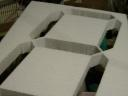

Clock Primer
Here is the intro to the clock project:
 We start with a template made at a sign shop, and the cover the edges with aluminum tape to protect them from the heat from the hot wire.
We start with a template made at a sign shop, and the cover the edges with aluminum tape to protect them from the heat from the hot wire.
 I’ve pushed out holes with a strait wire and a blow torch to give my entry points for my hot wires. Its going to be a plunge and cut job.
I’ve pushed out holes with a strait wire and a blow torch to give my entry points for my hot wires. Its going to be a plunge and cut job.
The laserpointer helps guide the hot wire because it inevitably bends and makes crooked cuts. Following the point makes straiter cuts. The laser isn’t cutting the stryofoam for us… Yet.
{kind=link}
 Only a CNC machine could have done a better job. A CNC machine…. With a laser cutter!!!
{kind=link}
This clock is going to have a great R-Value !!!
{kind=link}
 God help us all.
God help us all.